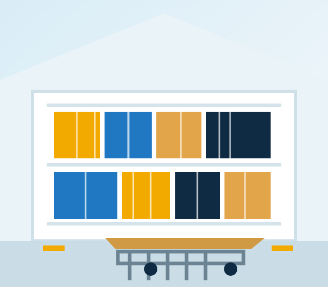
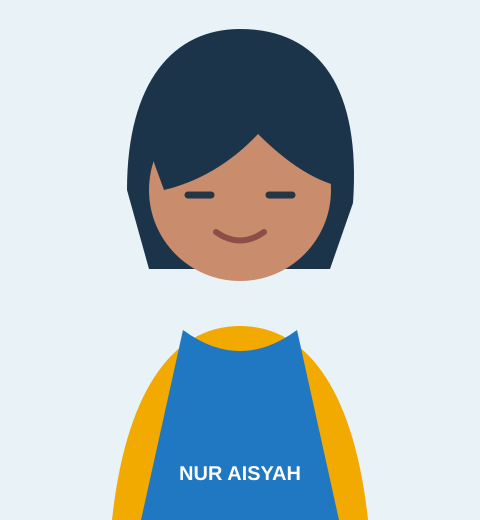

Menjadi mitra logistik pilihan yang menghubungkan potensi bisnis Indonesia.
Kami ingin menghadirkan konektivitas yang membuka lebih banyak kesempatan bagi setiap bisnis.
Berawal dari Makassar, kami tumbuh dengan satu tujuan: membuat perjalanan logistik bisnis Indonesia lebih mudah dan dapat diandalkan.
PT Samudra Karya Logistik adalah perusahaan jasa logistik dan pengiriman barang yang berpusat di Makassar. Kami membantu pelaku usaha mengelola pergerakan barang melalui layanan darat, laut, udara, serta pergudangan.
Dengan mengutamakan komunikasi terbuka, penanganan yang cermat, dan kemitraan jangka panjang, kami hadir sebagai bagian dari rantai pasok yang membuat bisnis terus melaju.
Bicarakan Kebutuhan Anda
Kami ingin menghadirkan konektivitas yang membuka lebih banyak kesempatan bagi setiap bisnis.
Nilai ini menjadi dasar cara kami bekerja dan membangun kepercayaan.
Kami menepati komitmen dan menjaga kepercayaan yang diberikan.
Kami mendengarkan kebutuhan dan memperhatikan setiap detail kiriman.
Kami percaya solusi terbaik lahir dari kerja sama yang terbuka.
Kami belajar dan berbenah agar selalu relevan untuk pelanggan.
Setiap tahun membawa pengalaman dan kemitraan baru.
Merintis layanan pengiriman darat untuk mendukung bisnis lokal.
Memperluas layanan pengiriman laut untuk konektivitas yang lebih luas.
Mengembangkan layanan pergudangan dan dukungan distribusi.
Terus meningkatkan proses dan memperkuat jaringan layanan.
Kami bekerja bersama untuk memastikan setiap perjalanan mendapat perhatian terbaik.
Direktur Utama
Kepala Operasional
Kepala Komersial

Kepala Layanan Pelanggan
Ceritakan tujuan bisnis Anda kepada tim kami.